А02 · покрытие · наклон · активные · каналы
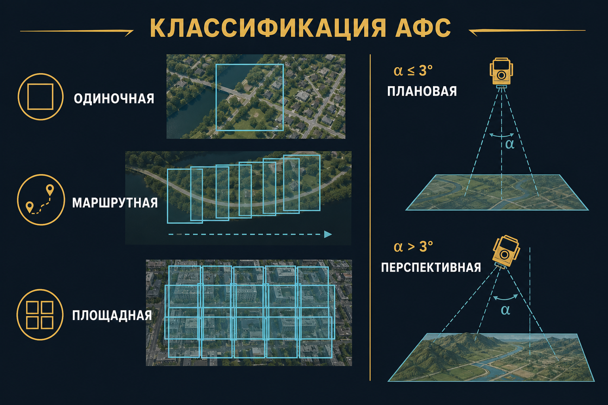
Одиночная (одинарная) АФС
Один кадр или несколько кадров без взаимного перекрытия. Стереопары нет, блока нет. Подходит для обзора, инспекции, «фото с воздуха» — не для орто и ЦММ «по учебнику».
Маршрутная АФС
Один заход: кадры перекрываются вдоль линии полёта (продольное перекрытие Px). Полоса местности. Без поперечных маршрутов это ещё не площадной блок.
Площадная АФС
Участок длиннее и шире одного кадра; ряд параллельных маршрутов, обычно широтных. Самый частый вид топосъёмки. Нужны и Px вдоль маршрута, и Py между маршрутами — иначе маршруты не связать.
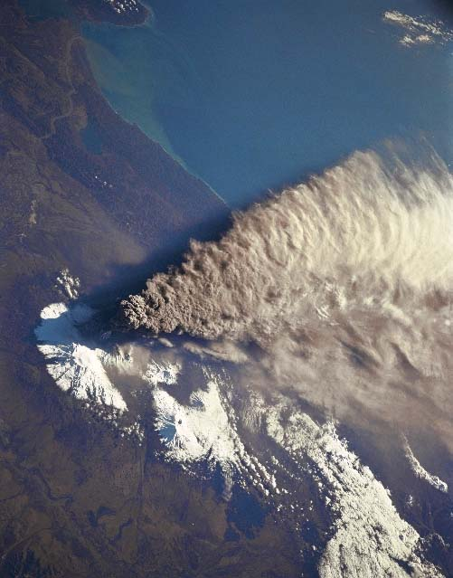
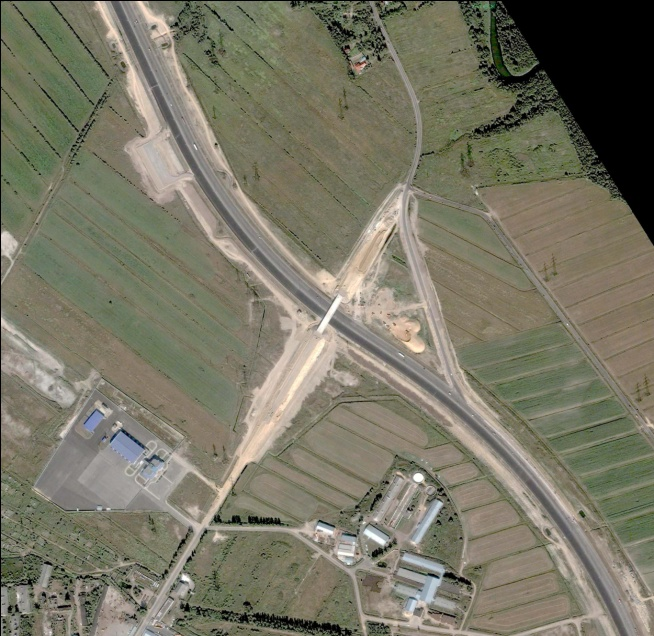
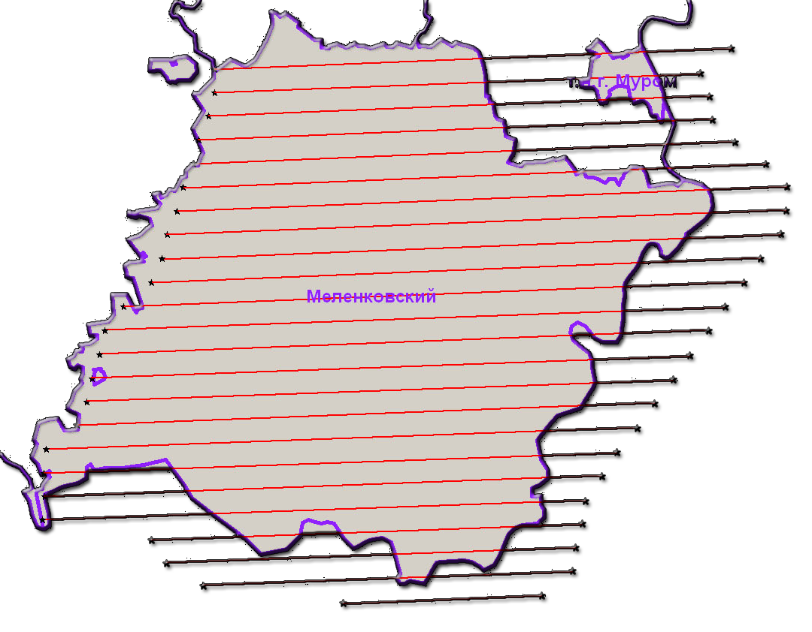
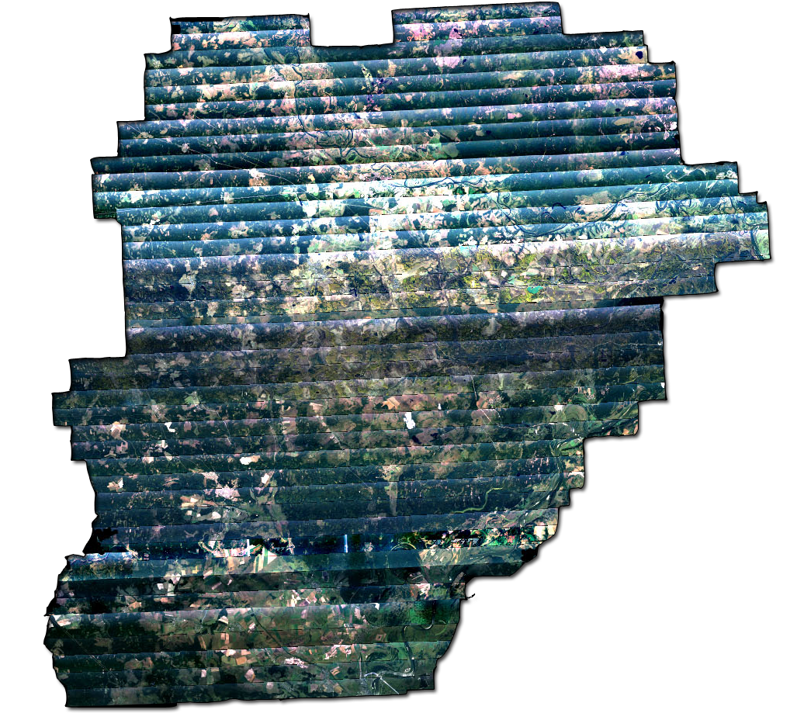
Плановая АФС
Ось аэрофотоаппарата в надир; отклонение от отвеса α ≤ 3°. Кадровый фотограмметрический снимок при таком наклоне. Это «карта с воздуха»: орто и стерео по учебнику, базисы Bx работают. Порог 3° — ГОСТ / учебник, не «на глаз».
Перспективная АФС
Заданный наклон оси, α > 3° (острый угол к горизонту). Виды, мониторинг фасадов, 3D кварталов. Формулы надирной АФС с базисом «как на карте» начинают врать — это конвергентная история Ф07.
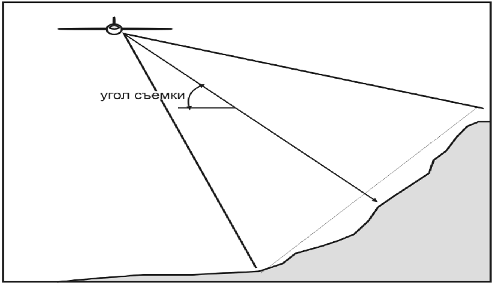
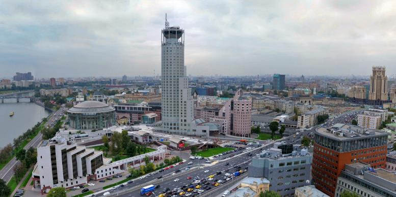
Пассивные методы
Регистрируют излучение объекта или отражённое природное (Солнце): цветная аэрофотосъёмка, ближний ИК, тепловой ИК. Ночью без Солнца в видимом — темно; тепло видит своё излучение поверхности.
Активные методы
Система сама подсвечивает и принимает возврат: лазерная аэросъёмка (лидар), радиолокация. День/ночь, облака (для РЛС) — другие правила, чем у ЦФК. Это тоже дистанционка с воздуха, но не «фотоаппарат» семестра 3.
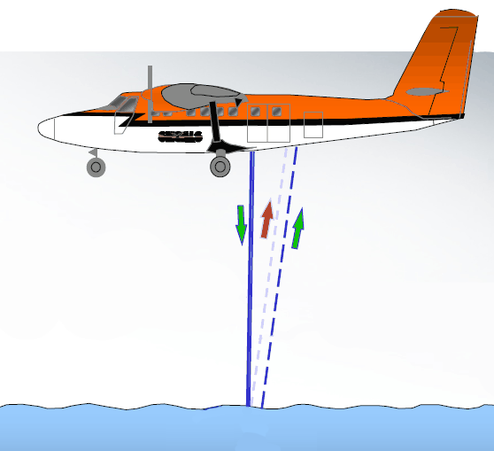
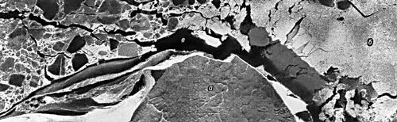
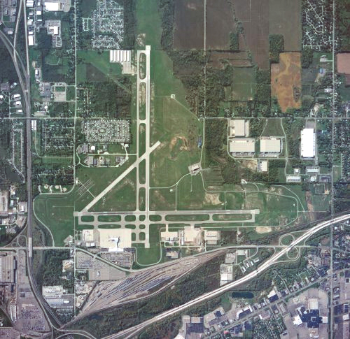
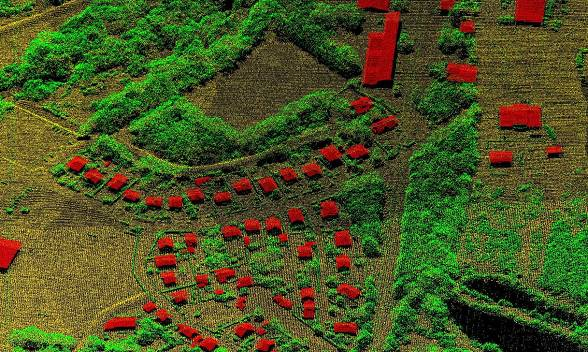
Панхроматическая съёмка
Один широкий канал (часто весь видимый ± немного УФ). Серый снимок, обычно острее геометрически: вся энергия в один приёмник, меньше шума на пиксель. Для отождествления и орто часто лучше, чем один узкий цветной канал.
Мультиспектральная съёмка
Больше одного канала (R, G, B, NIR…). Дешифрирование и индексы (NDVI) живут здесь. Геометрия блока обычно строится по панхрому или по одному острому каналу, цвет натягивают потом.
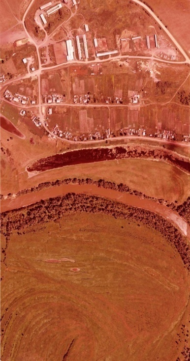
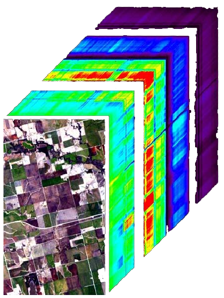
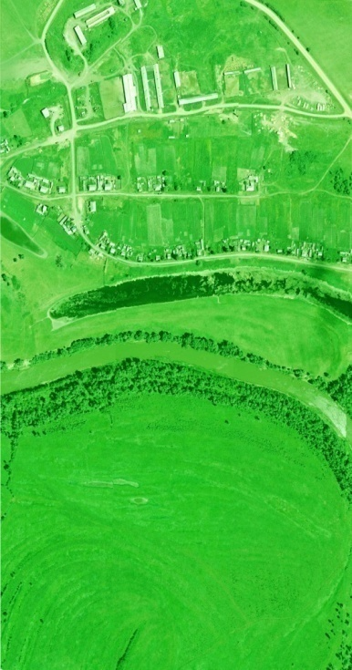
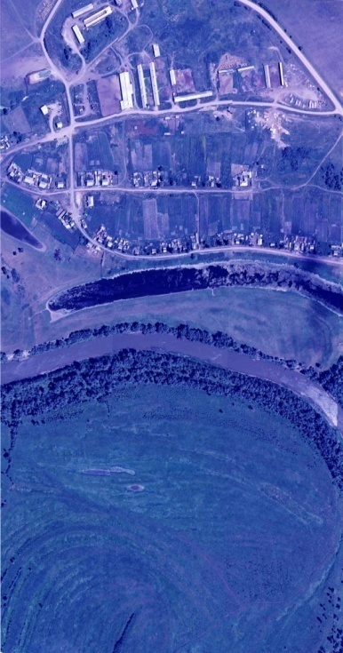
Гиперспектральная съёмка
Сотни узких каналов (ориентир > 100). Спектральная сигнатура вещества, не «ещё один RGB». Цена, объём данных, калибровка — другой класс работ. На топоплан 1:2000 гиперспектр не обязателен.
Одна сцена в разных окнах — разные слои вещества (Ф06, оптика среды).
← → пробел — слайды
F — полный экран
N — заметки докладчика